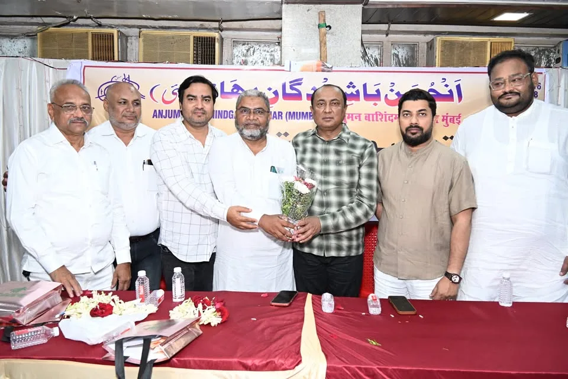
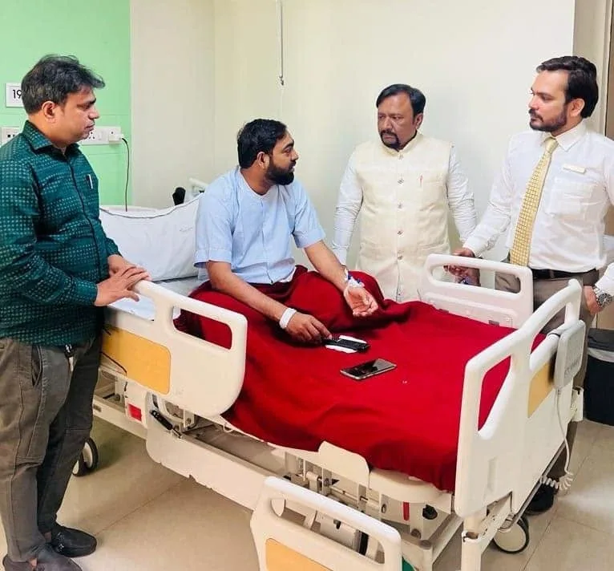
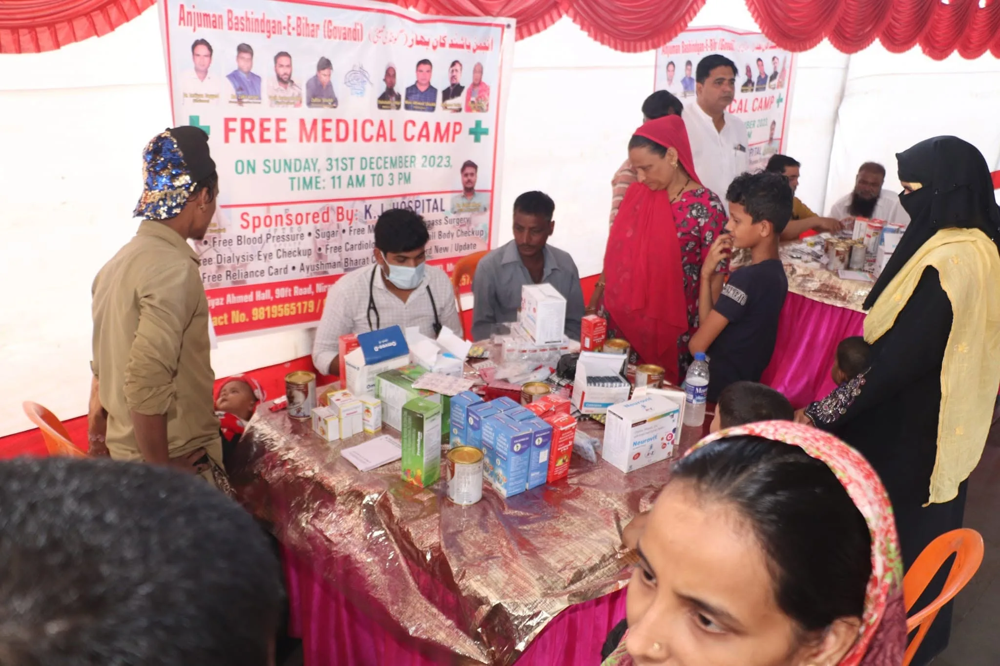
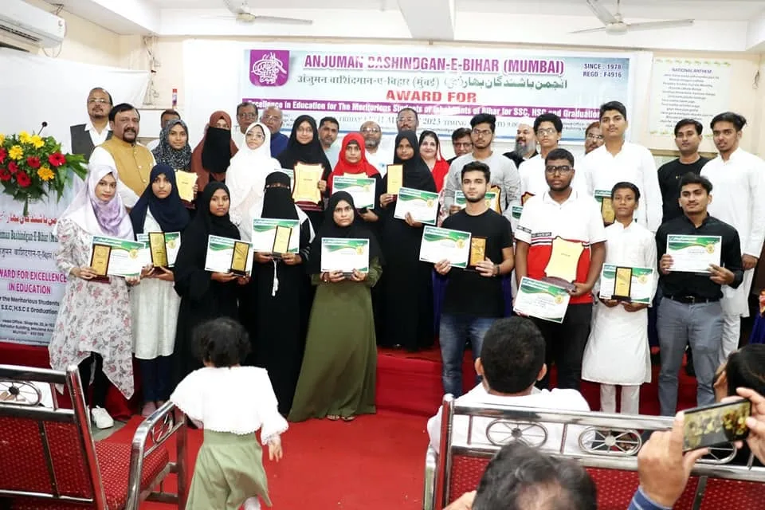
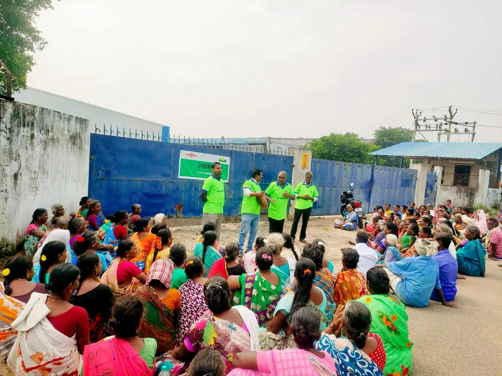
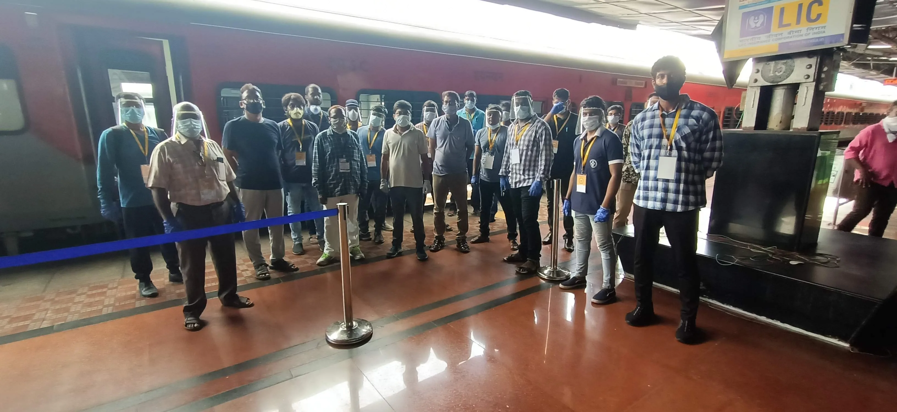
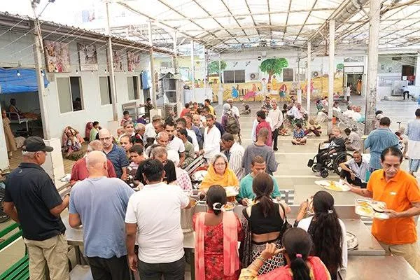
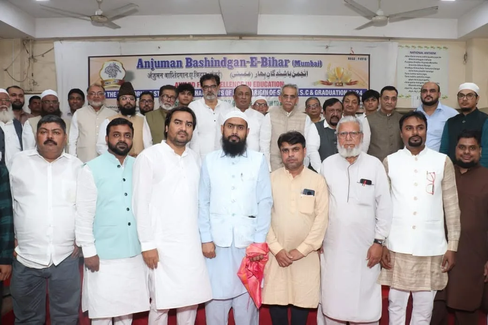
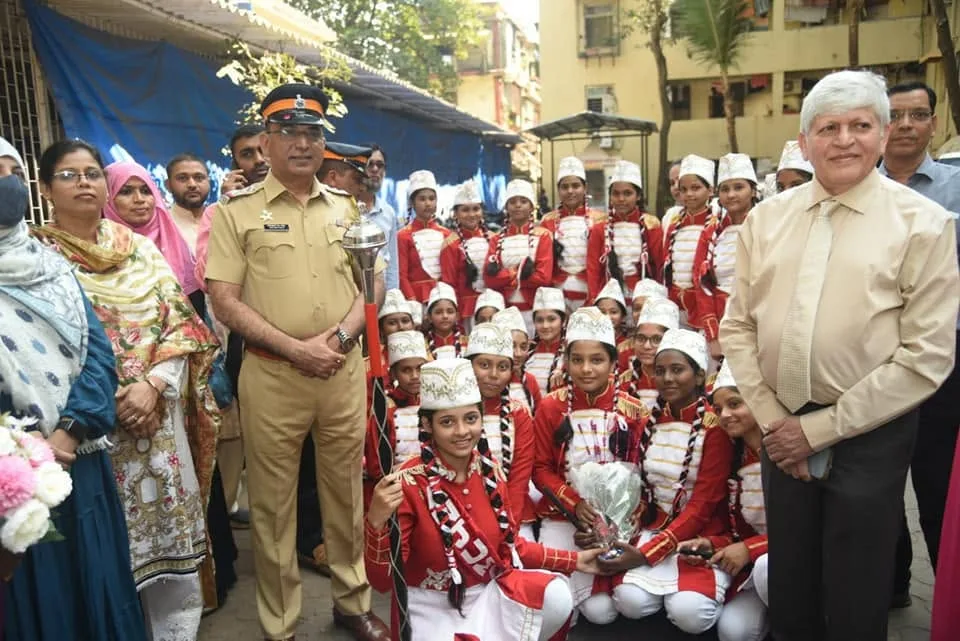
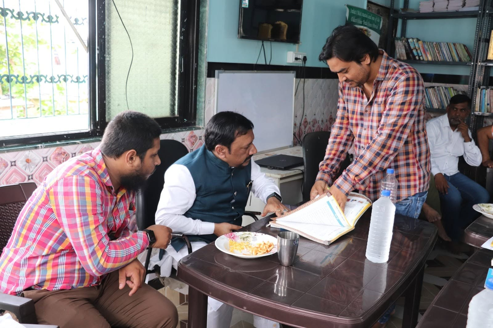

Medical
Assistance for genuine healthcare and treatment-related needs.
Anjuman Bashindgan-E-Bihar works with individuals and families across Mumbai through medical assistance, education support, livelihood assistance, essential travel support and community welfare initiatives.
Registered applicants can securely submit, manage and track their assistance requests online.

Community Support
Medical, education, livelihood and essential travel assistance through one organised support system.
Assistance for genuine healthcare and treatment-related needs.
Support for students pursuing education and academic opportunities.
Assistance connected with work, livelihood and economic self-reliance.
Essential travel assistance for eligible people facing genuine need.

Anjuman Bashindgan-E-Bihar has been serving the community since 1978, supporting people through humanitarian, healthcare, education and welfare initiatives.
Today, the organisation continues its work through community support activities and a more structured assistance system that helps applicants request support and follow the progress of their applications.
Our digital platform is designed to make assistance easier to understand, easier to request and easier to track while maintaining dignity throughout the process.
Choose the type of support that best matches your situation and begin your request through our structured application process.

Support for eligible applicants facing genuine healthcare and medical-treatment related needs.
Apply for medical support →
Assistance for eligible students pursuing education and academic opportunities.
Apply for education support →
Support related to livelihood, employment and pathways toward greater economic stability.
Apply for livelihood support →
Essential travel support for eligible individuals and families facing genuine circumstances.
Apply for travel support →Our impact section reflects documented Anjuman activities and publicly reported community work.
Anjuman Bashindgan-E-Bihar has publicly described its community service in Mumbai as continuing since 1978.
During the first COVID-19 lockdown, Anjuman's Dharavi branch supported thousands of migrant labourers with regular food and assistance returning home by train.
Anjuman's community work has included documented medical camps and healthcare support activities through its Dharavi branch.

Anjuman's work extends beyond individual applications. Over the years, the organisation has taken part in relief, healthcare, education and community-support initiatives across Mumbai.
During the first lockdown, Anjuman's Dharavi branch helped migrant workers with regular food and assistance arranging train travel back home.
Medical camps have been documented through Anjuman's Dharavi branch as part of its healthcare and community-support work.
Anjuman has also participated in education-related guidance and community initiatives supporting students and young people.
The organisation continues to participate in welfare activities intended to support people and families facing genuine need.
Our online application system helps applicants submit information securely and follow their request through the review process.
Register securely so your applications, documents and status updates stay connected to your account.
Select Medical, Education, Livelihood or Travel assistance based on your situation.
Complete the application and upload the supporting documents required for review.
Follow the status from your dashboard as Anjuman reviews and updates your request.
Anjuman's assistance and community work is supported through its Nagpada Head Office and Dharavi branch.
Anjuman's head office supporting community welfare and assistance activities.
20/103-A, Raja Bahadur BuildingCommunity assistance, outreach and support activities through Anjuman's Dharavi branch.
Contact the organisation for current branch address, timings and assistance enquiries.
Real photographs from community activities, healthcare initiatives, education-related work and humanitarian outreach.



Apply for Medical, Education, Livelihood or Travel assistance through Anjuman's structured application system.
Your support can help Anjuman continue its humanitarian and community welfare initiatives.